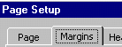

|
Physics Laboratory |

|
Excel Tutorial #12 |
|
11. Statistics E |
Helpful Hints |
Physics Tutorials F |
Well, you've come to end of the Excel tutorials for physics lab students. I hope that you have found them useful and informative. But before we conclude, let me offer you a few helpful hints that may make your lab experience a more satisfying one.

Work carefully.
One of the exhilarating aspects of a physics lab course
is that once your experiment has concluded and you have left the lab
room, you can not double-check your recorded data. Take your time and
make careful measurements and have all lab partners verify these
measurements. (Here I am reminded of the old woodworker's rule:
Measure twice, cut once.)
When recording values in your notebook or data table, be careful to transcribe the correct values. Confer with your lab partner(s) before leaving the lab that your recorded data is correct.

Neatly display your work.
Use Excel to make your data and data analysis attractive and easy
to read. Create titles and
headings to clearly show what the data represents.
Label your data columns with the
correct units. Use the appropriate
number of significant figures.
Also emphasize important text by making it
bold and adding
borders. Shade
cells that contain formulas.

Display sample formulas.
Show your work by displaying sample formulas
for each group of formulas. If you fail to do this, your TA will not
be able to follow your work and correct your mistakes.
Shade the cell to make the
displayed formula even more noticeable.

Check your work by hand.
Don't trust your Excel formula to spit out the correct answer. It is
quite easy (and common) to improperly use
a spread sheet to perform complicated calculations. To prevent
careless mistakes, double-check each group of formulas by hand, or with
a hand-held calculator.
Also, get in the habit of examining your final result by asking yourself, Does this answer seem reasonable? Although not every lab experiment will deliver small percent error values less than, say, 5%, it is safe to say that, if performed properly, your results should be within 50% of an accepted value. If your results showed huge error values, say 200%, chances are you either made a calculation error or did not perform the experiment properly. (See Hint #1 above.)

Printing tips.
Here are some hints on printing your worksheet so your TA can easily
grade your report (so you will get a good grade!).
- Resize the rows and columns so
data and text are easy to read.
- Consult the Page Setup menu to ensure that you
print gridlines and the row and column
headings.
- Try to fit the data and any analysis on one printed page. There
are several ways to do this.
- Make the font size smaller to
enable more text to fit on the page.

- Decrease the page margins by clicking on File >>
Page Setup >> Margins tab and adjusting the margin widths.
- If you have many columns, you may find that orienting the
page in landscape mode (as opposed to portrait mode)
is all that is needed. To do this, click on File >>
Page Setup >> Page tab and change the orientation to
Landscape.
- Finally, you can scale the page size and force Excel
to print that entire worksheet onto one page. To do this,
click on File >> Page Setup >> Page tab and either
- Adjust the page size to some percentage of its
normal size,
or,
- Fit the worksheet to a defined number of pages.
- Adjust the page size to some percentage of its
normal size,
- Make the font size smaller to
enable more text to fit on the page.
Whew, you made it!
You have reached the end of the Excel tutorials. I hope you have enjoyed the show. I am interested in hearing from you. If you have any comments and/or concerns about the format, usefulness or readability of these tutorials, please contact .
Thanks, and good luck to you in your physics lab!
If you have a question or comment, send an e-mail to
.
|
11. Statistics E |

|
Physics Tutorials F |
Copyright © 2000, Clemson University. All Rights Reserved.
This page was created by
.